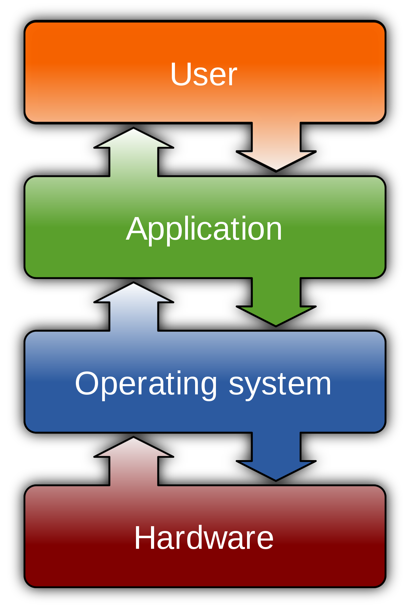

Introduction Windows Linux MacOS Android

An operating system (OS) is system software that manages computer hardware, software resources, and provides common services for computer programs.A single-tasking system can only run one program at a time
A multi-tasking operating system allows more than one program to be running in concurrency. This is achieved by time-sharing, where the available processor time is divided between multiple processes
Single-user operating systems have no facilities to distinguish users, but may allow multiple programs to run in tandem
A multi-user operating system extends the basic concept of multi-tasking with facilities that identify processes and resources, such as disk space, belonging to multiple users, and the system permits multiple users to interact with the system at the same time
A distributed operating system manages a group of distinct, networked computers and makes them appear to be a single computer, as all computations are distributed (divided amongst the constituent computers).
Embedded operating systems are designed to be used in embedded computer systems. They are designed to operate on small machines with less autonomy (e.g. PDAs). They are very compact and extremely efficient by design, and are able to operate with a limited amount of resources